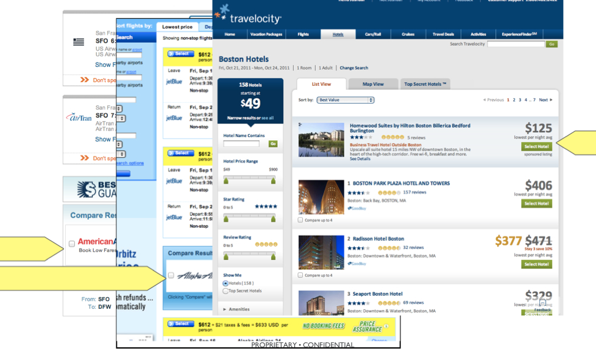

hackNY 2012 Summer Presentation
Sophie Chou
Everyone hates powerpoints.
What does Intent Media do?
- Intent advertising
- Search engine concept, for travel
- Use machine learning to try to predict who's out to buy, and who's out to browse
A picture
Publishers & Advertisers
The Challenge
As you can seem many companies serve both sides!How can we ensure that no client is at a disadvantage?
< Machine Learning >
The Seasonality Model
Basic (Multiple) Linear Regression
$$Y_i = \beta_0 + \beta_1X_{i,1} + .... + \beta_PX_{i,P} + \epsilon_i$$- where $x_{i,p}$ is the value of the $p^{th}$ predictor at for the $i^{th}$ value of y
- $\beta_0$ is the regression constant
- $\beta_p$ is the coefficient on the $p^{th}$ predictor
- P is the total number of predictors
- $y_i$ is the predictand of the $i^{th}$ value of y
- $e_i$ is the error term
Using Linear Algebra
$$Y = X\beta + \epsilon$$ a.k.a. $$ \begin{bmatrix}y_1\\y_2\\.\\.\\.\\y_n\end{bmatrix} = \begin{bmatrix} 1 & x_{11} & x_{12} & ... & x_{1p} \\ 1 & x_{21} & x_{22} & ... & x_{2p}\\ & & & ... & & & \\ & & & ... & & &\\ 1 & x_{n1} & x_{n2} & ... & x_{np}\end{bmatrix} \begin{bmatrix}\beta_0 \\ \beta_1 \\... \\... \\... \\ \beta_p \end{bmatrix} + \begin{bmatrix}\epsilon_1\\\epsilon_2\\.\\.\\.\\\epsilon_n\end{bmatrix} $$ **Disclamer: knowledge of Linear Algebra based on WikipediaWe want to solve for the coefficients $\beta$
where $$ \beta = (X^{\top}X)^{-1}X^{\top}Y $$The Seasonality Problem
How can we predict publisher revenue based on patterns in behavior over time?For example, do people tend to buy more on Fridays versus Mondays?
In the morning versus night?
The Seasonality Model
using a simple regression,we want to generate the revenue $y$ based on selected input signals $x_1 ... x_j$.
these are all indicator variables that take on the value 0|1 (a.k.a. booleans).
Example: Weekday Seasonality
$$y = \beta_0 + \beta_1x_1 + \beta_2x_2 + \beta_3x_3 + \beta_4x_4 + \beta_5x_5 + \beta_6x_6 $$ $y$ is the publisher revenue$x_1$...$x_6$ are the variables Monday through Saturday (either 0 or 1 depending on what day of the week it is; Sunday is the intercept)
$\beta_0$...$\beta_6$ are the average values of the revenue on Sunday-Monday, respectively.
This is what we are trying to find.
Example, con't
Let's say we only have one week's worth of data. Then, $$x = \begin{bmatrix}Sunday\\Monday\\Monday\\Tuesday\\Tuesday\\Tuesday\\Wednesday\\Thursday\\Friday\\Friday\\Saturday\end{bmatrix} = \begin{bmatrix}1 & 0 & 0 & 0 & 0 & 0 & 0\\1 & 1 & 0 & 0 & 0 & 0 & 0\\1 & 1 & 0 & 0 & 0 & 0 & 0\\1 & 0 & 1 & 0 & 0 & 0 & 0\\1 & 0 & 1 & 0 & 0 & 0 & 0\\1 & 0 & 1 & 0 & 0 & 0 & 0\\1 & 0 & 0 & 1 & 0 & 0 & 0\\1 & 0 & 0 & 0 & 1 & 0 & 0\\1 & 0 & 0 & 0 & 0 & 1 & 0\\1 & 0 & 0 & 0 & 0 & 1 & 0\\1 & 0 & 0 & 0 & 0 & 0 & 1\end{bmatrix} y = \begin{bmatrix} $_{Sun} \\ $_{Mon} \\ \ $_{Mon} \\ $_{Tues} \\ $_{Tues} \\ $_{Tues} \\$_{Weds} \\ $_{Thurs} \\ $_{Fri} \\ $_{Fri} \\ $_{Sat} \end{bmatrix} = \begin{bmatrix} 0.0 \\ 0.5 \\ 0.5 \\1.0 \\ 1.5 \\ 1.5 \\ 0.0 \\ 0.5 \\ 1.0 \\ 0.5 \\ 1.0 \end{bmatrix}$$ The repetition of days means that several transactions occurred on that day. This is a simplified example: In reality, there would be many, many values per day, of course! (y-values hypothetical)con't...
$$\beta = (X^{\top}X)^{-1}X^{\top}Y$$ $$\beta = \begin{bmatrix} \beta_{Sun} \\ \beta_{Mon} \\ \beta_{Tues} \\ \beta_{Weds} \\ \beta_{Thurs} \\ \beta_{Fri} \\ \beta_{Sat} \end{bmatrix} = \begin{bmatrix} 0.00 \\ 0.50 \\ 1.33 \\ 0.00 \\ 0.50 \\ 0.75 \\ 1.00 \end{bmatrix} $$ Which is indeed the average revenue per ad call on a given day!Downweighting
But what if we had two or more weeks of data? We want the value of $\beta$ to be cumulative, but don't want the data from 6 months ago to be worth the same as yesterday's data!Data that is more recent is likely to be a better predictor for the revenue.
con't...
introduce the variable $\gamma$ to downweight older data.Let's say we had $n$ weeks of data. Then, we'll multiply the $i^{th}$ week's data by $\gamma^{i-n}$, where i = 1, 2, ..., n.
That means the most recent data has downweight $\gamma^0$, or no downweighting at all, whereas the first week will be downweighted by a multiple of $\gamma^{n-1}$, yielding a much smaller product.
This means, of course, that $\gamma \le 1$, or else we'd get bigger and bigger values the farther we went back in time!
Cumulative Beta Example
Let's say, for example, we have 3 weeks of data, and we set $\gamma = 0.5$ (in other words, each week is worth half as much the further back you go in time).$$\beta_1 = (X_1^{\top}X_1)^{-1}(X_1^{\top}Y_1)$$ $$\beta_2 = (0.5*X_1^{\top}X_1 + X_2^{\top}X_2)^{-1}(0.5*X_1^{\top}Y_1 + X_2^{\top}Y_2)$$ $$\beta_3 = (0.25*X_1^{\top}X_1 + 0.5*X_2^{\top}X_2 + X_3^{\top}X_3)^{-1}(0.25*X_1^{\top}Y_1 + 0.5*X_2^{\top}Y_2 + X_3^{\top}Y_2)$$
Implementation
 +
+
 +
+
 +
+

+
+